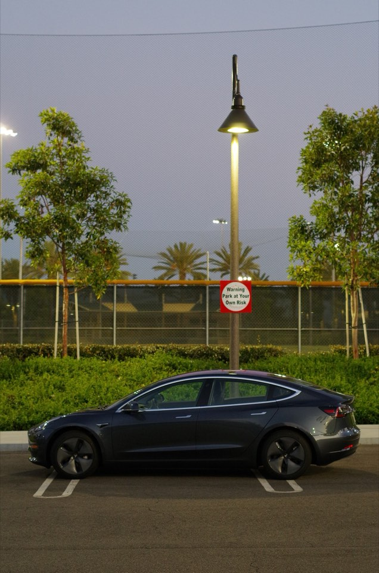
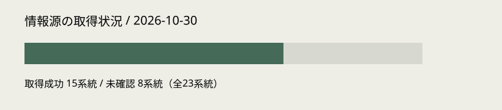

HW3 + HW4 · AUTOMATED SOURCE MONITOR
2026.10.30｜購入・補助金・中古相場とオーナーズトピックス
購入・補助金・中古相場・FSD・充電などの23系統中、15系統を取得。取得できなかった情報も明示します。

Darin Caggiano / Wikimedia Commons · CC BY-SA 4.0 · 縮小版。表示枠に合わせたトリミングあり。
これは取得結果の日本語レポートです。海外見出しは未検証の報道案内。国内の解禁・在庫・開業を自動認定する記事ではありません。
今回検出した更新
確定できる新規掲載・構造化販売情報の変化はありませんでした。取得できなかった情報源について変化がないとは判断できません。
公式発表・海外報道への入口
初回取得時の見出しは既存の参考記事です。見出しの掲載順と公開日は原文で確認してください。過去記事の再配信もあり得ます。
- 日本公式 · 初回参考新しいModel 3とModel Y、Model Y L - おでかけも、もしもの備えも、テスラの電気で。Tesla Japan 公式発表 / 原文公開日 2026-10-23
- 日本公式 · 初回参考10月28日（水）、東海エリアの新たな納車拠点「テスラ デリバリーセンター名古屋みなと」をオープンTesla Japan 公式発表 / 原文公開日 2026-10-15
- 日本公式 · 初回参考茨城県ひたちなか市に「テスラ ひたちなか」をオープンTesla Japan 公式発表 / 原文公開日 2026-09-25
- 日本公式 · 初回参考Cybercab（サイバーキャブ）を日本初公開Tesla Japan 公式発表 / 原文公開日 2026-09-05
- 日本公式 · 初回参考外国車ブランド 車種別No.1*は、テスラ Model YTesla Japan 公式発表 / 原文公開日 2026-08-27
- 海外報道・未検証 · 初回参考South Korean Police Are Cracking Down On Tesla Owners Jailbreaking FSD - InsideEVs世界FSD報道の発見用RSS / 原文公開日 Thu, 29 Oct 2026 21:25:02 GMT
- 海外報道・未検証 · 初回参考Chase Auto Is Advertising Tesla FSD to Its Customers - BASENOR - Tesla Accessories世界FSD報道の発見用RSS / 原文公開日 Fri, 30 Oct 2026 00:04:41 GMT
- 海外報道・未検証 · 初回参考76-Year-Old Woman in California Says Tesla FSD Lets Her Stay Out Later, But Is That Actually Safe? -世界FSD報道の発見用RSS / 原文公開日 Thu, 29 Oct 2026 18:56:02 GMT
- 海外報道・未検証 · 初回参考South Korean court rejects Tesla owners' lawsuit seeking 'Full Self-Driving' refunds - Reuters世界FSD報道の発見用RSS / 原文公開日 Thu, 29 Oct 2026 02:00:00 GMT
- 海外報道・未検証 · 初回参考76-Year-Old Lady Has Been Traveling Around in Her Tesla on FSD Only for Months - autoevolution世界FSD報道の発見用RSS / 原文公開日 Thu, 29 Oct 2026 22:22:18 GMT
- 規制当局・原文確認 · 初回参考Elon Musk Weight Loss: How the Tesla CEO’s Reported Transformation Put Weight-Loss Medication and L…規制当局の関連発表（RSS発見） / 原文公開日 Thu, 22 Oct 2026 18:46:38 GMT
- 規制当局・原文確認 · 初回参考Vehicle Detail Search - 2026 TESLA ROBOTAXI (CYBERCAB) - National Highway Traffic Safety Administra…規制当局の関連発表（RSS発見） / 原文公開日 Tue, 06 Oct 2026 20:20:50 GMT
- 規制当局・原文確認 · 初回参考ODI RESUME - NHTSA | National Highway Traffic Safety Administration (.gov)規制当局の関連発表（RSS発見） / 原文公開日 Fri, 09 Oct 2026 07:00:00 GMT
- 規制当局・原文確認 · 初回参考Consumer Alert: July is National Vehicle Theft Prevention Month - NHTSA | National Highway Traffic …規制当局の関連発表（RSS発見） / 原文公開日 Tue, 06 Jul 2021 14:25:23 GMT
- 規制当局・原文確認 · 初回参考NHTSA Approves More Than $800M for States to Make Roads Safer - National Highway Traffic Safety Adm…規制当局の関連発表（RSS発見） / 原文公開日 Mon, 29 Sep 2025 18:16:31 GMT
- 海外報道・未検証 · 新規検出2026.39.6 Official Tesla Release Notes - Software Updates - Not a Tesla App世界FSD報道の発見用RSS / 原文公開日 Thu, 29 Oct 2026 22:02:02 GMT
- 補助金・期限 · 初回参考令和７年度補正 CEV 補助金（車両） 申請者向けリーフレットについてCEV補助金：実施機関のお知らせ / 原文公開日 原文で確認
- 補助金・期限 · 初回参考令和７年度補正 CEV 補助金（車両） オンライン申請のシステムメンテナンスによる利用停止についてCEV補助金：実施機関のお知らせ / 原文公開日 原文で確認
- 補助金・期限 · 初回参考令和７年度補正 外部給電器補助金 オンライン申請のシステムメンテナンスによる利用停止についてCEV補助金：実施機関のお知らせ / 原文公開日 原文で確認
- 補助金・期限 · 初回参考＜重要＞ 令和７年度補正予算「燃料電池自動車用水素供給設備設置補助事業」三次公募の受付開始CEV補助金：実施機関のお知らせ / 原文公開日 原文で確認
- 購入・補助金／未検証 · 初回参考【実質値引き】テスラ「充電サポートプログラム」キャンペーンを開始〜最大26.4万円、先着5,000台 - Touch Lab日本のTesla購入・補助金の報道発見 / 原文公開日 Fri, 23 Oct 2026 20:00:55 GMT
- 購入・補助金／未検証 · 初回参考テスラ、「モデルY」など一部改良で車両から給電 台数限定で値引き - 日本経済新聞日本のTesla購入・補助金の報道発見 / 原文公開日 Fri, 23 Oct 2026 05:30:15 GMT
- 購入・補助金／未検証 · 初回参考中古EVはなぜ安い？3年落ちリーフの買取相場は新車の26％！日産やテスラのリセールバリューに見る補助金の影 - リセバ総研日本のTesla購入・補助金の報道発見 / 原文公開日 Mon, 26 Oct 2026 18:32:13 GMT
- 購入・補助金／未検証 · 新規検出【EV補助金が最大50万円減】2027年1月から新基準へ！ CEV補助金はなぜ減額？ 年明け納車は要注意 (carview！) - Yahoo!ニュース日本のTesla購入・補助金の報道発見 / 原文公開日 Sat, 24 Oct 2026 09:02:26 GMT
- アクセサリー／未検証 · 初回参考【2026年10月発売】ホンダ 新型 ヴェゼル 純正アクセサリー「Black Sports Style」価格・装着例を解説 - 最新自動車情報Tesla用アクセサリー新着の発見 / 原文公開日 Sat, 24 Oct 2026 05:12:24 GMT
- アクセサリー／未検証 · 初回参考【速報】壮大すぎるテスラの街、Terafabの公式パースが公開 Sara Duterte Impeachment Update (IR4uP3j3iJ) - Unisba MediaTesla用アクセサリー新着の発見 / 原文公開日 Sun, 25 Oct 2026 10:03:37 GMT
- 購入・補助金／未検証 · 新規検出モメンタ日本へ急接近、テスラに迫れるか 中国E2E自動運転トップの技術力 - 日経クロステック日本のTesla購入・補助金の報道発見 / 原文公開日 Wed, 28 Oct 2026 20:00:00 GMT
- 購入・補助金／未検証 · 新規検出27年1月以降のEV補助､車種別一覧 トヨタbZ4Xは78万円 - 日本経済新聞日本のTesla購入・補助金の報道発見 / 原文公開日 Tue, 27 Oct 2026 20:00:00 GMT
- 購入・補助金／未検証 · 新規検出二重のEV補助金､都民の購入熱が沸騰 増額知る5割が検討 - 日本経済新聞日本のTesla購入・補助金の報道発見 / 原文公開日 Tue, 27 Oct 2026 20:00:00 GMT
- 購入・補助金／未検証 · 新規検出スペースXとテスラ統合協議・PHPに脆弱性・ディスコ純利益予想下回る - 日経CNBC online日本のTesla購入・補助金の報道発見 / 原文公開日 Fri, 23 Oct 2026 07:24:00 GMT
- 規制当局・原文確認 · 新規検出Departments of Commerce and Transportation Announce $109 Million in Grants to Modernize 911 Service…規制当局の関連発表（RSS発見） / 原文公開日 Thu, 29 Apr 2021 08:15:39 GMT
- 購入・補助金／未検証 · 新規検出新しいテスラ モデル3＆モデルY登場！ CHAdeMOアダプターで急速充電の利便性大幅向上へ - Yahoo!ニュース日本のTesla購入・補助金の報道発見 / 原文公開日 Fri, 23 Oct 2026 07:01:40 GMT
- 購入・補助金／未検証 · 新規検出【解説】テスラの紹介リンクで「Model 3／Model Y」が35,000円引き〜使い方と注意点のまとめ - Touch Lab日本のTesla購入・補助金の報道発見 / 原文公開日 Fri, 23 Oct 2026 15:45:09 GMT
- 購入・補助金／未検証 · 新規検出テスラ モデル3 日本仕様を改良、先着で26.4万円支援も｜16インチ画面 - トランスカー日本のTesla購入・補助金の報道発見 / 原文公開日 Fri, 23 Oct 2026 07:22:08 GMT
- 購入・補助金／未検証 · 新規検出E2E自動運転革命 - 日経クロステック日本のTesla購入・補助金の報道発見 / 原文公開日 Fri, 23 Oct 2026 12:08:19 GMT
日本のオーナーへの確認ポイント
HW3・HW4とも、海外の提供開始・価格・バージョンを国内条件へ直接適用しないでください。在庫は公式商品画面、新しい充電拠点は公式詳細と車内地図を確認します。国内の開始時期を推定できる新たな根拠は、この定型レポートでは認定していません。
購入前・オーナー向け：今日の確認ポイント
購入特典は対象車・期限・残枠、補助金は登録日別の額・申請期限・予算終了見込みを分けて確認。FSDはHWと契約、アップデートは日本向け配信条件を確認します。アクセサリーは車両世代・実寸・国内販売条件を照合します。
本日のモデル別・年式別中古相場
元データ：カーセンサーの公開相場表。価格帯ごとの分布から中央値の所属範囲を求めたものです。グレード・距離・修復歴の構成をそろえた指数ではありません。
カーセンサー Model 3 掲載価格相場
取得 2026-10-30T09:50:10+09:00 / 掲載 195台。出典：掲載価格分布 ↗
| 登録年の区分 | 掲載台数 | 中央値が属する範囲（本体価格） | 注意 |
|---|---|---|---|
| 2019年 | 12台 | 190万円以上〜230万円未満 | 掲載価格・成約価格ではない |
| 2020年 | 18台 | 190万円以上〜230万円未満 | 掲載価格・成約価格ではない |
| 2021年 | 66台 | 230万円以上〜250万円未満 | 掲載価格・成約価格ではない |
| 2022年 | 68台 | 270万円以上〜290万円未満 | 掲載価格・成約価格ではない |
| 2023年 | 12台 | 370万円以上〜410万円未満 | 掲載価格・成約価格ではない |
| 2024年 | 13台 | 370万円以上〜390万円未満 | 掲載価格・成約価格ではない |
| 2025年 | 5台 | 370万円以上〜390万円未満 | 少数標本（10台未満） |
国内導入前の年式区分 1台を表から除外。入力誤りや並行輸入を自動判定していません。
カーセンサー Model Y 掲載価格相場
取得 2026-10-30T09:50:10+09:00 / 掲載 146台。出典：掲載価格分布 ↗
| 登録年の区分 | 掲載台数 | 中央値が属する範囲（本体価格） | 注意 |
|---|---|---|---|
| 2022年 | 49台 | 280万円以上〜300万円未満 | 掲載価格・成約価格ではない |
| 2023年 | 50台 | 320万円以上〜340万円未満 | 掲載価格・成約価格ではない |
| 2024年 | 15台 | 380万円以上〜400万円未満 | 掲載価格・成約価格ではない |
| 2025年 | 28台 | 500万円以上〜520万円未満 | 掲載価格・成約価格ではない |
| 2026年以降 | 4台 | 520万円以上〜560万円未満 | 少数標本（10台未満） |
カーセンサー Model S 掲載価格相場
取得 2026-10-30T09:50:10+09:00 / 掲載 24台。出典：掲載価格分布 ↗
| 登録年の区分 | 掲載台数 | 中央値が属する範囲（本体価格） | 注意 |
|---|---|---|---|
| 2014年 | 1台 | 275万円以上〜295万円未満 | 少数標本（10台未満） |
| 2015年 | 2台 | 295万円以上〜455万円未満 | 少数標本（10台未満） |
| 2016年 | 2台 | 0万円以上〜435万円未満 | 少数標本（10台未満） |
| 2017年 | 3台 | 215万円以上〜235万円未満 | 少数標本（10台未満） |
| 2018年 | 5台 | 375万円以上〜395万円未満 | 少数標本（10台未満） |
| 2019年 | 1台 | 255万円以上〜275万円未満 | 少数標本（10台未満） |
| 2020年 | 6台 | 415万円以上〜535万円未満 | 少数標本（10台未満） |
| 2021年 | 1台 | 595万円以上〜615万円未満 | 少数標本（10台未満） |
| 2023年 | 3台 | 915万円以上 | 少数標本（10台未満） |
カーセンサー Model X 掲載価格相場
取得 2026-10-30T09:50:10+09:00 / 掲載 45台。出典：掲載価格分布 ↗
| 登録年の区分 | 掲載台数 | 中央値が属する範囲（本体価格） | 注意 |
|---|---|---|---|
| 2016年 | 1台 | 0万円以上〜285万円未満 | 少数標本（10台未満） |
| 2017年 | 15台 | 385万円以上〜405万円未満 | 掲載価格・成約価格ではない |
| 2018年 | 8台 | 465万円以上〜505万円未満 | 少数標本（10台未満） |
| 2019年 | 5台 | 425万円以上〜445万円未満 | 少数標本（10台未満） |
| 2020年 | 10台 | 545万円以上〜605万円未満 | 掲載価格・成約価格ではない |
| 2021年 | 1台 | 685万円以上〜705万円未満 | 少数標本（10台未満） |
| 2023年 | 4台 | 1085万円以上〜1105万円未満 | 少数標本（10台未満） |
| 2024年 | 1台 | 1145万円以上〜1165万円未満 | 少数標本（10台未満） |
この日の取得状況

| 情報源 | 状態 | 確認時刻 |
|---|---|---|
| Tesla Japan 公式発表 | 取得成功 | 2026-10-30T09:50:10+09:00 |
| 世界FSD報道の発見用RSS | 取得成功 | 2026-10-30T09:50:10+09:00 |
| FSD 世界提供地域（Tesla公式） | 未確認 / アクセス制限により自動取得できません | 2026-10-30T09:50:10+09:00 |
| FSD 米国価格・機能（Tesla公式） | 未確認 / アクセス制限により自動取得できません | 2026-10-30T09:50:10+09:00 |
| オランダRDW：FSD承認の公式説明 | 取得成功 | 2026-10-30T09:50:10+09:00 |
| 規制当局の関連発表（RSS発見） | 取得成功 | 2026-10-30T09:50:10+09:00 |
| 米国NHTSA TeslaリコールAPI / Model Y 2026 | 取得成功 | 2026-10-30T09:50:10+09:00 |
| 日本Supercharger公式一覧 | 未確認 / アクセス制限により自動取得できません | 2026-10-30T09:50:10+09:00 |
| モバイルコネクター公式商品 | 未確認 / アクセス制限により自動取得できません | 2026-10-30T09:50:10+09:00 |
| ウォールコネクター公式商品 | 未確認 / アクセス制限により自動取得できません | 2026-10-30T09:50:10+09:00 |
| CHAdeMO公式商品（URL存続も確認） | 未確認 / アクセス制限により自動取得できません | 2026-10-30T09:50:10+09:00 |
| 日本公式ショップ充電カテゴリ | 未確認 / アクセス制限により自動取得できません | 2026-10-30T09:50:10+09:00 |
| CEV公式：登録日別・車両別の補助額PDF | 取得成功 | 2026-10-30T09:50:10+09:00 |
| CEV補助金：実施機関のお知らせ | 取得成功 | 2026-10-30T09:50:10+09:00 |
| Tesla日本：現在の購入特典 | 未確認 / アクセス制限により自動取得できません | 2026-10-30T09:50:10+09:00 |
| Spigen公式 Teslaアクセサリー | 取得成功 | 2026-10-30T09:50:10+09:00 |
| 日本のTesla購入・補助金の報道発見 | 取得成功 | 2026-10-30T09:50:10+09:00 |
| Teslaアップデートの報道発見 | 取得成功 | 2026-10-30T09:50:10+09:00 |
| Tesla用アクセサリー新着の発見 | 取得成功 | 2026-10-30T09:50:10+09:00 |
| カーセンサー Model 3 掲載価格相場 | 取得成功 | 2026-10-30T09:50:10+09:00 |
| カーセンサー Model Y 掲載価格相場 | 取得成功 | 2026-10-30T09:50:10+09:00 |
| カーセンサー Model S 掲載価格相場 | 取得成功 | 2026-10-30T09:50:10+09:00 |
| カーセンサー Model X 掲載価格相場 | 取得成功 | 2026-10-30T09:50:10+09:00 |

Nashucks / Wikimedia Commons · CC0 · 縮小版。表示枠に合わせたトリミングあり。

Vauxford / Wikimedia Commons · CC BY-SA 4.0 · 縮小版。表示枠に合わせたトリミングあり。